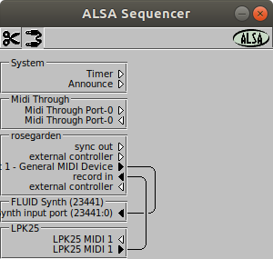
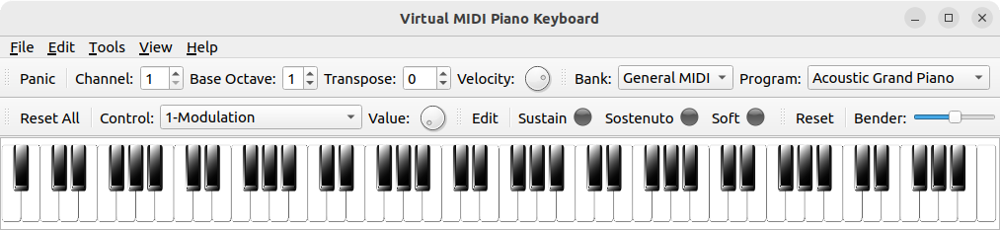
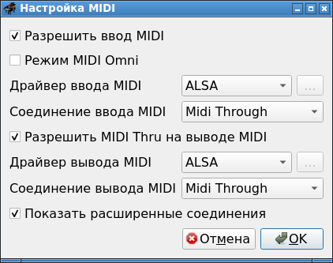

Для связывания MIDI-устройств понадобится утилита:
aconnectgui
Это программа, которая имеет графический интерфейс, в котором перечислены все устройства, имеющие отошение к MIDI. Между этими устройствами возможно совершение двух действий: связывание, и разрыв связи. Связывать, естественно, можно только выход и вход (обозначаются треугольничками: > -это выход, < - это вход). Для связывания надо выбрать соответсвующий инструмент, кликнуть на выход, и не отпуская клавишу мышки, перетянуть указатель на вход.
Интерфейс выглядит так:

Особенность данной программы в том, что в ней нет адекватной возможности динамически перечитывать появляющиеся в системе устройства. Иногда устройства динамически перечитываются. Иногда - нет. Поэтому при каждом подключении устройства или при запуске MIDI-программы или плагина, данную программу надо перезапускать, чтобы она отобразила новые устройства.
Вообще, у данной программы есть консольный дубликат - консольная утилита aconnect. Через нее можно смотреть наличие MIDI-устройств:
> aconnect -i
client 0: 'System' [type=kernel]
0 'Timer '
1 'Announce '
client 14: 'Midi Through' [type=kernel]
0 'Midi Through Port-0'
client 130: 'VMPK Output' [type=user,pid=25149]
0 'out '
> aconnect -o
client 14: 'Midi Through' [type=kernel]
0 'Midi Through Port-0'
client 129: 'VMPK Input' [type=user,pid=26860]
0 'in '
Помимо этой вышеописанных утили, в Linux ест
* * *
Сделать отправку MIDI-команд на какое-нибудь MIDI-устройство, можно с помощью программы Virtual MIDI Piano Keyboard (запускаемый файл - vmpk).
В этой программе можно помимо стандартных команд отсылать специализированные команды. Для этого можно перенастроить либо стандартные крутилки, либо можно добавить свои элементы.
Выглядит программа так:

Чтобы MIDI-устройства, создаваемые данной программой появились в система с драйверами ALSA, надо сделать настройки:
Правка - Соединения MIDI
Появится окно настроек:

В строках Драйвер ввода MIDI и Драйвер вывода MIDI надо, если необходимо, выставить ALSA. Практика показывает, что работа этих настроек достаточно глючная, и при нажатии OK виртуальная клавиатура вывалится в сегфолт. Но чаще настройка срабатывает, а при перезапуске программы aconnectgui, в ней начинают быть видны MIDI-порты данной виртуальной клавиатуры.
Если в системе не настроено Pulse Audio, виртуальная клавиатура будет ругаться в консоль:
MIDI Output "Failed to create PulseAudio connection"
pthread_setschedparam() failed, err= 0 Выполнено
Однако найти в её интерфейсе какое-либо упоминание о Pulse Audio невозможно. То есть неясно, то ли эту прогу насильно переделали на то, чтобы она вместо ALSA начала работать с PulseAudio, то ли еще что, но непонятки остаются.
* * *
Чтобы увидеть устройства, на которые можно направилять MIDI-поток, можно воспользоваться консольной утилитой aplaymidi:
aplaymidi -l
Данная утилита выводит примерно такую информацию:
Port Client name Port name
14:0 Midi Through Midi Through Port-0
129:0 VMPK Input in
Вообще, данная утилита предназначена для проигрывания MIDI-файлов. В качестве крайнего аргумента у нее задается имя файла, а через опцию -p можно указать порт, куда отправлять MIDI-поток, в формате client:port (указываетс ято, что написано в столбце Port).